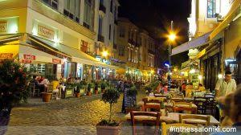

Τα Λαδάδικα είναι μία ιστορική συνοικία της πόλης της Θεσσαλονίκης. Χωρίζεται στις περιοχές Λαδάδικα και Άνω Λαδάδικα. H περιοχή Λαδάδικα οριοθετείται από τις οδούς “Ίωνος Δραγούμη”, “Τσιμισκή”, “Σαλαμίνος” και “Ναυάρχου Κουντουριώτου” ενώ τα Άνω Λαδάδικα από τις οδούς "Τσιμισκή", "Φράγκων", "Λέοντος Σοφού", "Δωδεκανήσου" "Βασιλέως Ηρακλείου" και "Βέροιας". Τα όρια της περιοχής προσδιορίζονται από το διάταγμα κήρυξής της ως "ιστορικού τόπου" (ΥΠΠΕ/ΔΙΛΑΠ/Γ/24917/1598/24.5.85) και η έκτασή της είναι 6,5 εκτάρια και περιλαμβάνει 24 οικονομικές νησίδες, εκεί όπου βρίσκονται εγκατεστημένες γύρω στις 300 μονάδες επιχειρήσεων όπου απασχολούνται περίπου 1400 εργαζόμενοι.
Η Νέα Κρήνη στην Καλαμαριά ξεχωρίζει για την πανέμορφη μαρίνα, τις ψαροταβέρνες, και αρκετά εντυπωσιακά cafe bar restaurants με μοναδική θέα

Λευκά τραπεζάκια πλάι στον Θερμαϊκό. Δροσερά μπαλκονάκια με θέα θάλασσα. «Νησιώτικοι» χώροι και κοσμοπολίτικα στέκια σχεδόν πάνω στο κύμα. Τριγυρίζουμε στην παραλία της Θεσσαλονίκης για καφέ ή ποτό στο απέραντο γαλάζιο της πόλης.